Lock screen
Above the lock screen
The lyrics stay up after you lock the Mac, and over the desktop too if you like, on every display or only the ones you choose.
 Back to work
Back to workmacOS app, 2026
The song you are playing, word by word
On your Mac’s desktop and lock screen
The latest release, free under the MIT license.For Macs with Apple silicon on macOS 15 or later, with Spotify or Apple Music.
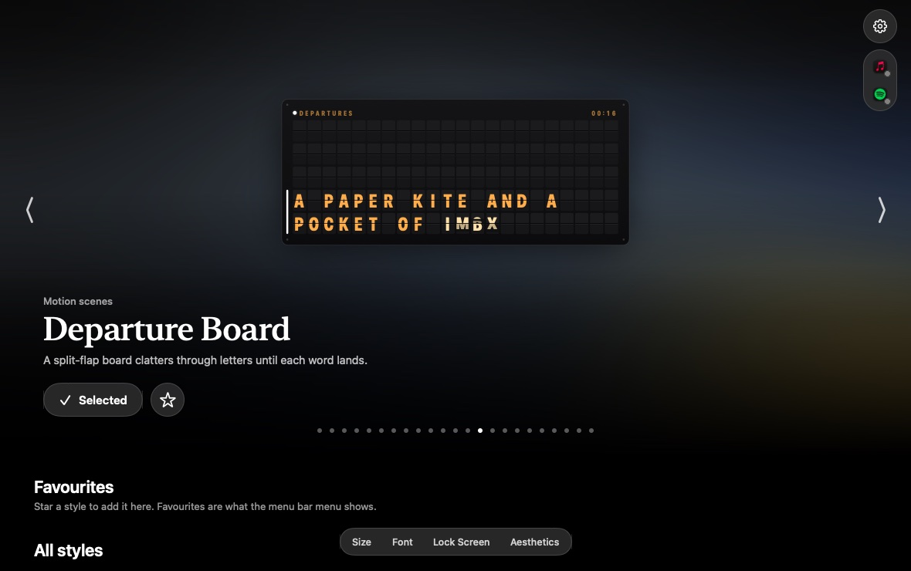
The idea
A small menu-bar app for people who like to see the words of a song while it plays.
Stanza follows the track playing in Spotify or Apple Music, finds lyrics timed to the song, and draws them over the desktop and above the lock screen, one word at a time, as they are sung.
Twenty-three styles decide how the words appear. Eight are kinetic type that stacks, stretches, inks and melts. Nine are small motion scenes, from a split-flap departure board to a till printing a receipt. Six borrow the look of a phone: a chat thread, a run of payments, a pile of alerts, a walk across a city map, a day planner and a list of voice memos.
Word by word
One line, “Paint the quiet harbour, every lamp still burning”, as three styles draw it 1.1, 1.9, 2.7 and 3.5 seconds in. Each word arrives as it is sung. The frames are rendered by the app itself, from its own sample lyrics.
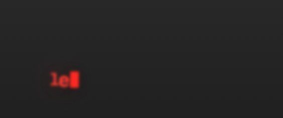
1.1 s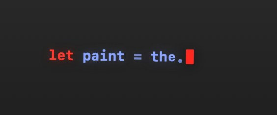
1.9 s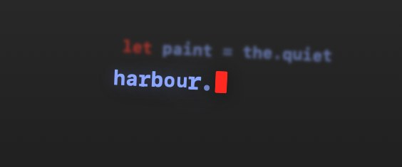
2.7 s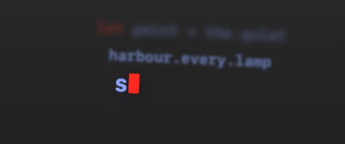
3.5 s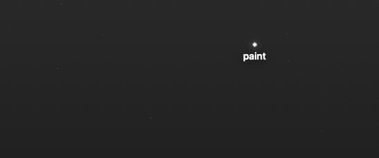
1.1 s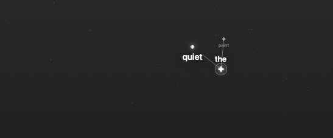
1.9 s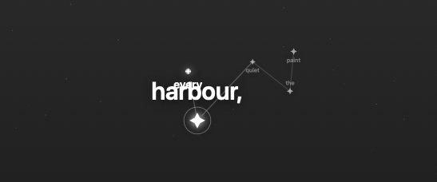
2.7 s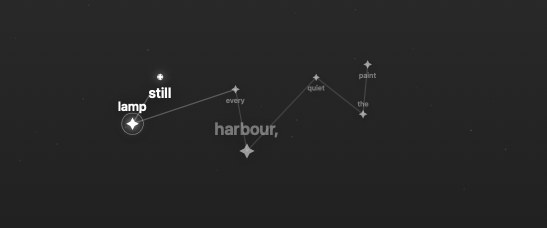
3.5 s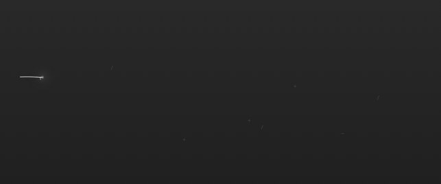
1.1 s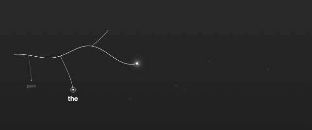
1.9 s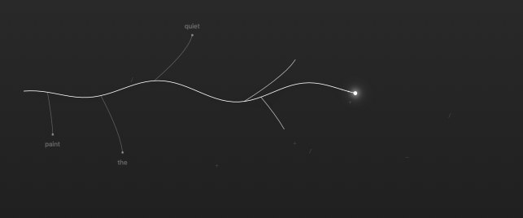
2.7 s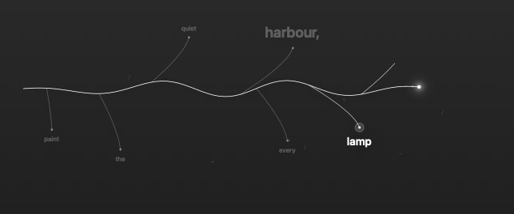
3.5 sWhat it does
Lock screen
The lyrics stay up after you lock the Mac, and over the desktop too if you like, on every display or only the ones you choose.
Timing
Each word appears when it is sung. Songs with only line timing get an estimated time for each word, spread by its letters.
Styles
The window plays every style as a live preview of the song you are playing. Star the ones you like: they get their own row, and the menu bar then lists only those.
Look
Size from 25% to 150%, the same for every style, on a slider that follows the scroll wheel. Seven fonts. Three colors of your own, or colors taken from the album cover.
Position
Drag Position shows a slim glass pill where the lyrics sit: drag it, even past the edge of the screen, size it, done. The spot is kept on every display and on the lock screen.
Pauses
After ten seconds of pause the lyrics fade away. They come back the moment the music plays again.
Setup
Each player shows what it still needs as numbered steps, with a one-click fix for the step that is still open.
Languages
Hindi, Urdu, Punjabi and Bengali songs show a version in English letters when one exists. Scripts whose letters join stay whole in every style.
The styles
Kinetic type, motion scenes and phone screens, each playing the app’s built-in demo song. Every clip is drawn frame by frame by Stanza’s own renderer, the same view that draws the lyrics on your screen.
How it works
Under the hood
Design decisions
Word timing
Many songs only have a start time for each line. Stanza gives each word a share of the line by its letters, and caps the line so a word before a long instrumental gap doesn’t crawl.
The Map style
The most involved style: a stroll through a city, drawn live from Apple Maps.
The window
Settings sit in a slim pill at the bottom, the players in a pill at the top right. Each opens only when asked, one at a time.
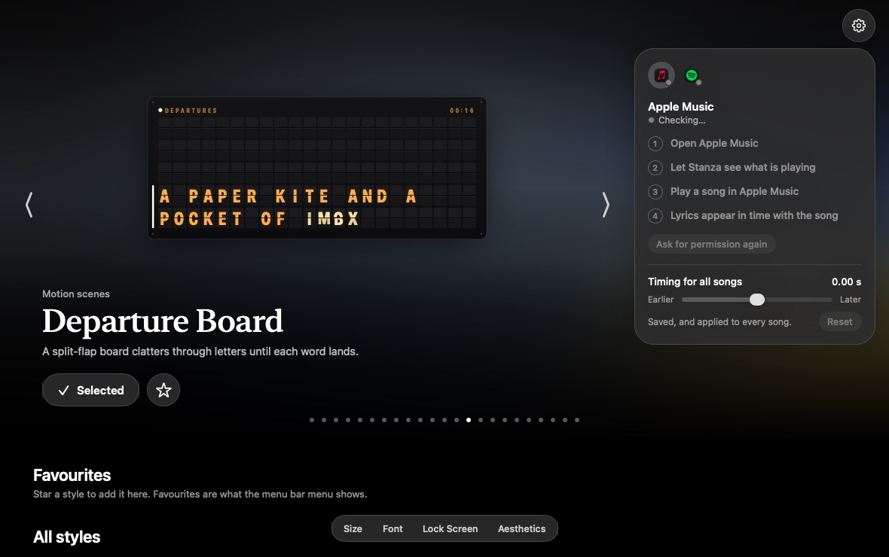
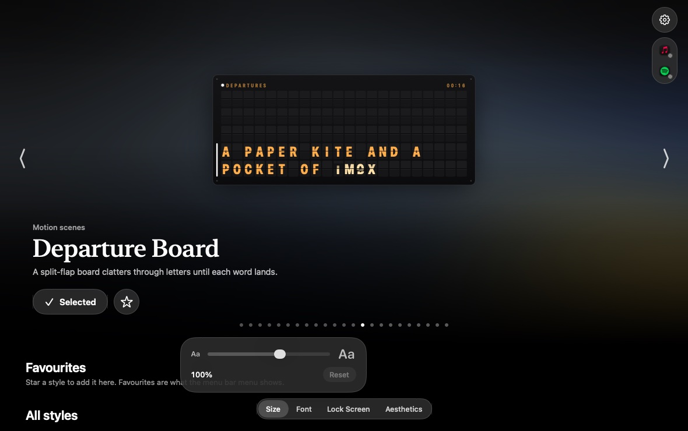
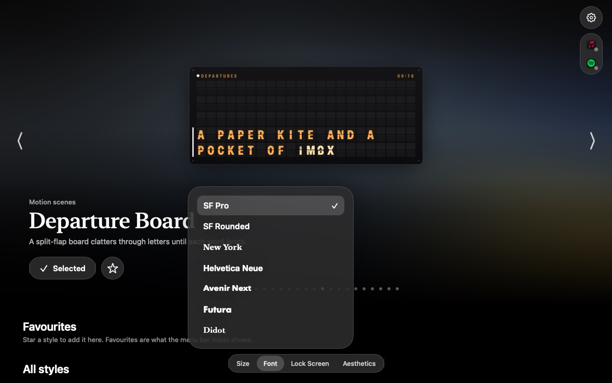
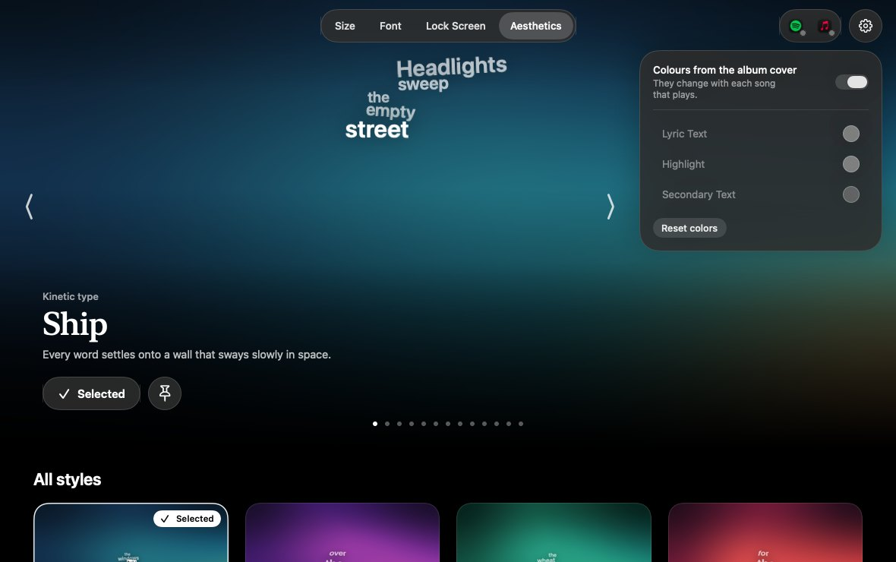
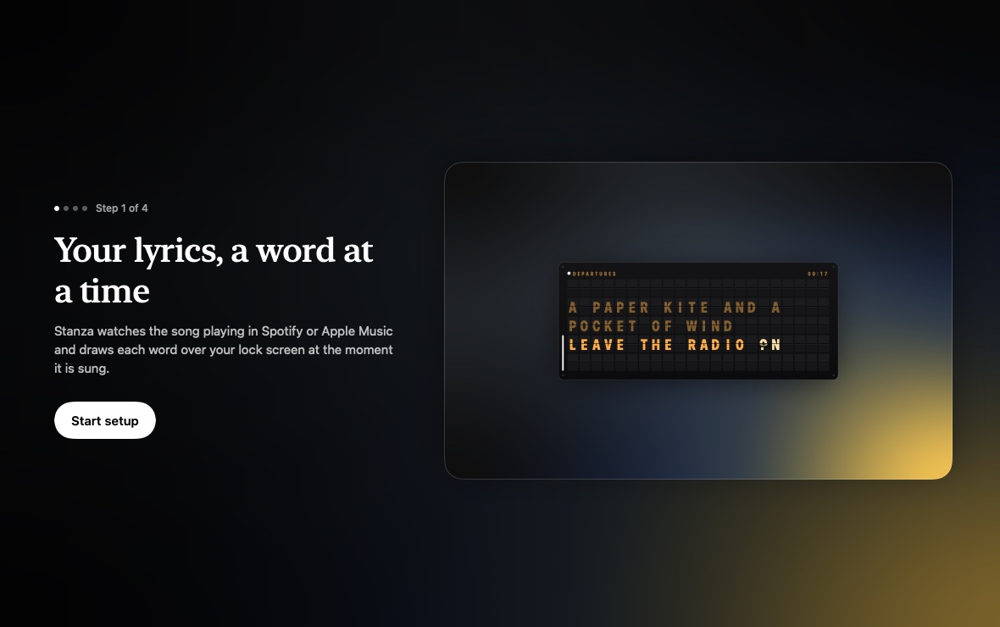
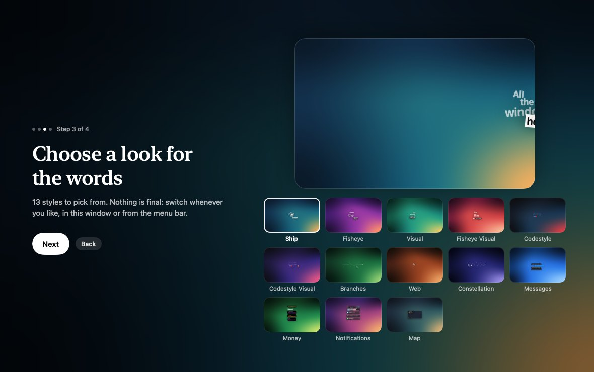
Quality
Figures measured from the source and the latest build.
Privacy
No analytics and no telemetry. Stanza needs one permission per player, to read what is playing, and nothing else.
Install
The latest release, free under the MIT license.For Macs with Apple silicon on macOS 15 or later, with Spotify or Apple Music.
On a Mac with Apple silicon
Download the disk image and open it.
Drag Stanza into Applications, then open it from there.
The first time, macOS says it can’t check Stanza for malicious software, because Stanza isn’t notarized by Apple. Click Done, open System Settings, then Privacy & Security, scroll down and click Open Anyway.
Choose Allow when macOS asks to let Stanza read Spotify or the Music app.
Or build it yourself with Apple’s command-line tools. The build fetches the pinned Sparkle framework, compiles the app and runs its self-check.
git clone https://github.com/Rayhanson-Git/stanza.git
cd stanza
./build.sh
open build/Stanza.appLimits
Stanza isn’t notarized by Apple, so the first open needs the extra step above. It runs on Apple silicon only.
Showing lyrics above the lock screen relies on an undocumented macOS interface. A macOS update could break it; Stanza would then show lyrics only while the Mac is unlocked.
The lyrics services aren’t under the project’s control, and some songs have no timed lyrics at all. There is no CI and there are no automated interface tests.
Try it
Free, MIT license. macOS 15 or later, on Apple silicon.